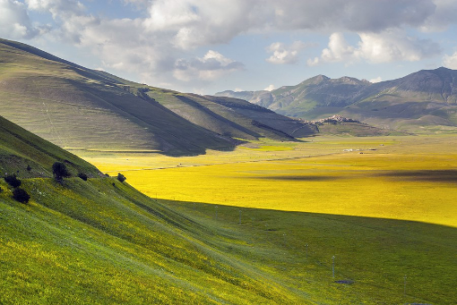

Le Regioni d'itlaia puo essere spacco in la regione Nord e la regione Sud. La cultura de i due regioni sono
molto diverso. Quando preoccupa cibi le differenze sono chiare. La causa può essere ha travato in molte cose, pero
una causa grande è geografia. In la Nord vicino Milan e Turin è la pianure de Italia. Questo permette per fa
l'allevamento di vacche. Questo ha guidato a burro è prominente grassa de cucina, e riso è utilizzo più di pasta.
In una regiona de Emilia-Romagna grano per pasta e prosciutto sono evidenziare. Infine posti vicino Naples o
Venezia frutti di mare è favorito, ma entrambi sono diverso. Italia ha molti diversi cucina, ma la geografia
forzato la cucina a sviluppa in vari modi.
